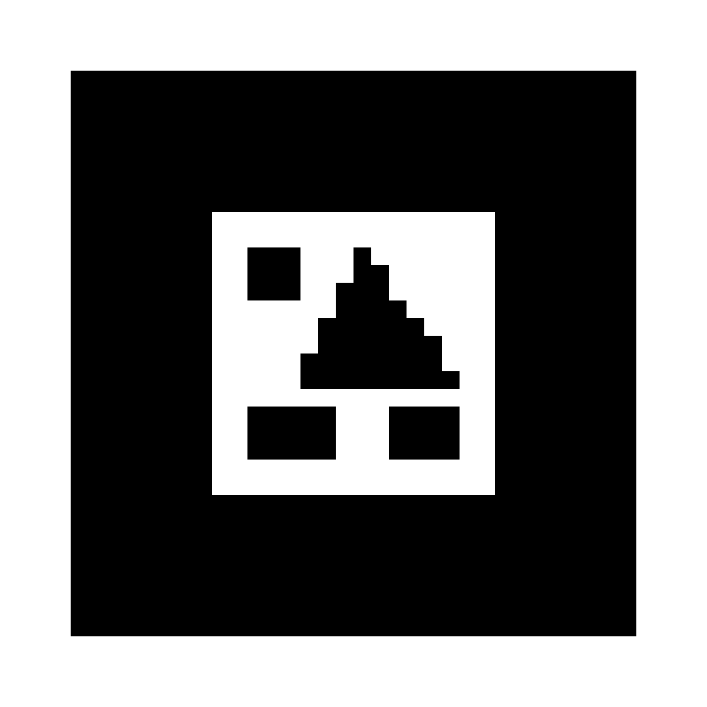

Cube
Six equal squares. Which faces become opposite faces?
MATH 1351 / Solids & their nets
How does a solid become a flat net? Scan a marker, then unfold its faces. Follow the colors as you fold it back together.
Six equal squares. Which faces become opposite faces?
Three pairs of matching rectangles. Find each pair.

MARKER 03Two triangles and three rectangles. Follow the bases.
Use Safari on iPhone or Chrome on Android. The preview also works on a laptop.
One net per solid in this first activity. Camera images are processed on your device; this activity does not record or upload them. Internet is needed to load the 3D libraries.
Scan one of the three printed markers.
Predict where each face will go before moving the slider.
Keep the entire marker visible in even light. For a large net, move the phone farther away. Scan one marker at a time, or space sheets well apart. In preview, use Rotate and Top view to inspect the net.